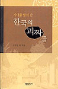
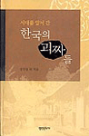

신념대로 살아간 조선 선비들 이야기
평가 : 읽어볼 만..

시대를 앞서간 한국의 괴짜들은 괴짜라 불리운 신념대로 살아간 조선 선비들의 이야기이다. 모두 다 조선 선비는 아니고, 몇몇은 1900년대 초/중반의 사람들도 나온다.
대부분 재미있고 통쾌하고 몇몇은 가슴찡한 일화들이다.
"미쳐야 미친다"에서도 그렇고 이 책에서 그렇고 당대에 허균은 정말 미쳐서 살아간 괴짜인가보다. 양반이면서 서얼과 천밀들에 얽혀살고 유학자이면서 불교와 천주학에 심취한 허균의 삶은 이 책을 보나 저 책을 보나 파란만장하구나.
여러명의 괴짜들을 여러 작가들이 소개하는데 양주동 선생편이 제일 재미 없었다.
불필요한 한자어 남발로 사전이 없으면 읽기 힘들 정도인데다, 내용도 대부분 내가 보기엔 괴짜스럽다기보다는 제 잘난 멋에 사는 사람같이 묘사해 두었다. 다른 괴짜들 처럼 사회 통념과 기득권층에 대한 신랄한 풍자와 조소 같은 것은 보이지 않았고 어떤 면에서 "시대를 앞서 간" 사람인지 잘 모르겠다. 실제 양주동 선생이 어떤 분인지는 잘 모른다. 어쨌는 이 책의 내용으로 봐서는 이 책에 가장 안어울리지 않나 싶다.
조선 말기 괴짜중에는 "정"씨 성을 가진 사람들이 많았나보다. 이 책에는 여러 정씨들이 등장한다 그 중에 하나 옮겨본다.
정수동의 신랄하고 해학넘치는 기득권 비판
평가 : 읽어볼 만..

시대를 앞서간 한국의 괴짜들은 괴짜라 불리운 신념대로 살아간 조선 선비들의 이야기이다. 모두 다 조선 선비는 아니고, 몇몇은 1900년대 초/중반의 사람들도 나온다.
대부분 재미있고 통쾌하고 몇몇은 가슴찡한 일화들이다.
"미쳐야 미친다"에서도 그렇고 이 책에서 그렇고 당대에 허균은 정말 미쳐서 살아간 괴짜인가보다. 양반이면서 서얼과 천밀들에 얽혀살고 유학자이면서 불교와 천주학에 심취한 허균의 삶은 이 책을 보나 저 책을 보나 파란만장하구나.
여러명의 괴짜들을 여러 작가들이 소개하는데 양주동 선생편이 제일 재미 없었다.
불필요한 한자어 남발로 사전이 없으면 읽기 힘들 정도인데다, 내용도 대부분 내가 보기엔 괴짜스럽다기보다는 제 잘난 멋에 사는 사람같이 묘사해 두었다. 다른 괴짜들 처럼 사회 통념과 기득권층에 대한 신랄한 풍자와 조소 같은 것은 보이지 않았고 어떤 면에서 "시대를 앞서 간" 사람인지 잘 모르겠다. 실제 양주동 선생이 어떤 분인지는 잘 모른다. 어쨌는 이 책의 내용으로 봐서는 이 책에 가장 안어울리지 않나 싶다.
조선 말기 괴짜중에는 "정"씨 성을 가진 사람들이 많았나보다. 이 책에는 여러 정씨들이 등장한다 그 중에 하나 옮겨본다.
정수동의 신랄하고 해학넘치는 기득권 비판
당시의 세도가 김흥근의 집에서 일어난 일이다. 시회를 연답시고 한상 그들먹하게 차렸다. 한창 취흥에 무르익는데 계집종이 달려와 수선을 피웠다. 사연인즉 계집종의 어린 딸이 엽전을 삼켰다는 것이었다. 식객들은 취흥이 잡쳤다고 웅절거리고, 김흥근은 그깟일로 감히 날뛰느냐면서 불호령을 놓는데, 유독 정수동만이 진지하게 물었다.
"삼킨 돈이 문제로다! 그 돈이 누구 돈이더냐?"
"그야 쇤네 것입죠!"
"그럼 걱정할 것 없느니라. 다만 배를 살사알 쓰다듬어 주거라!"
"배만 쓰다듬어 주면 죽진 않을깝쇼?"
"떼끼, 죽긴."
해놓고 정수동이 이르것다.
"남의 돈 7만 냥을 거저먹고도 배만 쓰다듬으면 아무 탈이 없는 세상인데, 아 제 돈 한 닢 삼켰기로 죽길 하겠느냐 배탈이 나겠느냐?"
바로 얼마전, 뇌물 7만 냥을 거뜬하게 챙긴 김흥근을 비꼬아 하는 말이었으니, 식객들은 정수동의 오달진 직언에 감복할 뿐이요, 김흥근은 뱃구레만 볼록거리며 할말이 없었던 것이다.